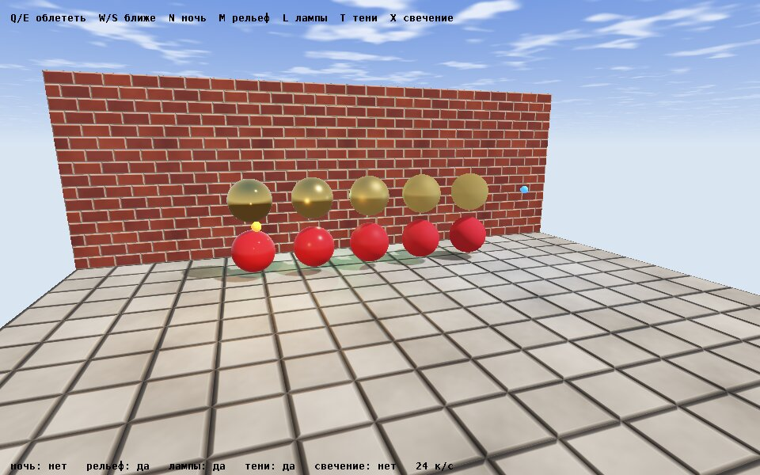
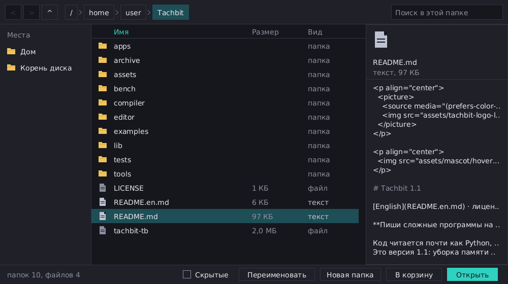

Tachbit 1.3 · open sourceTachbit 1.3 · открытый код
Complex programs in a clear language.
Сложные программы на понятном языке.
Tachbit reads almost like Python and runs like C. The compiler takes care of memory, cores and safety checks, and explains mistakes in plain words before the program runs.
Tachbit читается почти как Python, а работает как C. Память, ядра и проверки берёт на себя компилятор, а ошибки объясняет простыми словами ещё до запуска.
objItem
name: text
price: intfunctotal(items: list Item) gives r: int
s = 0each it in items
s += it.price
return s
funcmain()
items = list Item
items.add(Item(name: "tea", price: 120))
items.add(Item(name: "coffee", price: 200))
print("total:", total(items))
$ tb run main.tb → total: 320
$curl -fsSL https://raw.githubusercontent.com/superbro456/Tachbit/main/tools/get.sh | sh
NativeНастоящий кодCompiles to C, then a real programПереводит в C и даёт настоящую программу
Self-hostedСам себя собираетThe compiler is written in TachbitКомпилятор написан на Tachbit
EN · RUErrors in plain words, two languagesОшибки простыми словами, два языка
MITFree and open sourceБесплатный и открытый
What you can buildЧто можно написать
01
Games and 3D
Игры и 3D
Blender models with animation, PBR materials, lights and shadows, particles, your own shaders written in Tachbit. Metal on Mac, Vulkan on Linux and Windows.
Модели из Blender с анимацией, PBR-материалы, свет и тени, частицы, свои шейдеры прямо на Tachbit. Metal на Mac, Vulkan на Linux и Windows.
02
Desktop apps
Приложения
Several OS windows, buttons, lists and dialogs from lib/ui.tb, files, sound, gamepad, mouse look and fullscreen.
Несколько окон ОС, кнопки, списки и диалоги из lib/ui.tb, файлы, звук, геймпад, мышь и полный экран.
03
Safe use of every core
Все ядра без гонок
on all cores, background, channels and move. The compiler catches data races before the program runs.
on all cores, background, каналы и move. Гонки данных компилятор ловит до запуска.
04
Down to bare metal
До самого железа
tb bare makes a bootable x86-64 kernel. danger blocks give memory, ports and asm when you need them.
tb bare собирает загружаемое ядро x86-64. В блоках danger доступны память, порты и asm.
05
Errors you cannot ignore
Ошибки не теряются
fail, try and or. A call that can fail must be handled, so problems do not hide.
fail, try и or. Вызов, который может сломаться, нельзя проигнорировать.
06
Editor support
Редактор
VS Code extension «Tachbit Language»: colors, Tachbit Dark and Light themes, run with one button, errors right in the code.
Расширение «Tachbit Language» для VS Code: подсветка, темы Tachbit Dark и Light, запуск одной кнопкой, ошибки прямо в коде.
Made with TachbitСделано на Tachbit

examples/apps/pbr_roomexamples/apps/cube_man

apps/files
InstallУстановка
Mac / Linux
One command. Needs a C compiler (on Mac: xcode-select --install). Run it again to update.
Одна команда. Нужен компилятор C (на Mac: xcode-select --install). Запусти ещё раз, чтобы обновить.
curl -fsSL https://raw.githubusercontent.com/superbro456/Tachbit/main/tools/get.sh | sh
Windows
Installer, no admin rights needed. Sets up a C compiler if there is none. Already installed? Run it again: it updates Tachbit in place.
Установщик без прав администратора. Если нет компилятора C, поставит и его. Уже стоит? Запусти снова: он обновит Tachbit поверх.
brew tap superbro456/tachbit https://github.com/superbro456/Tachbit
brew install --HEAD tachbit
First programПервая программа
tb new hello # a project with main.tbtb start hello # build and runtb run file.tb # run one filetb check file.tb # only look for errorstb lang en # messages in English (tb lang ru — in Russian)